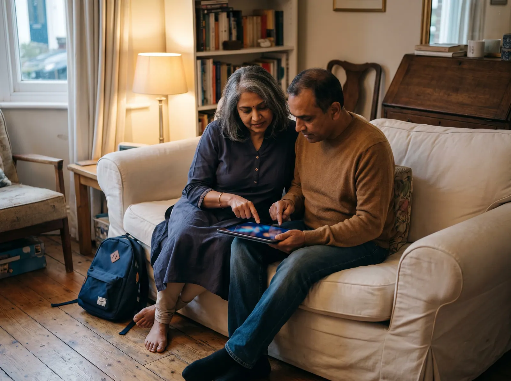
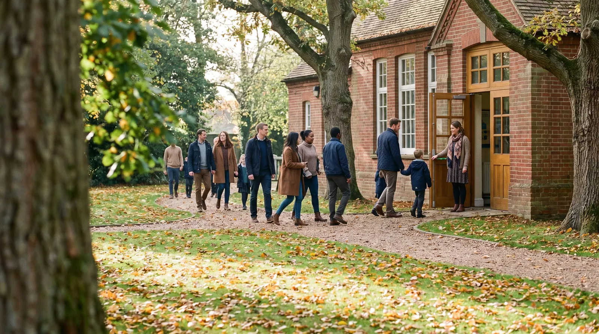
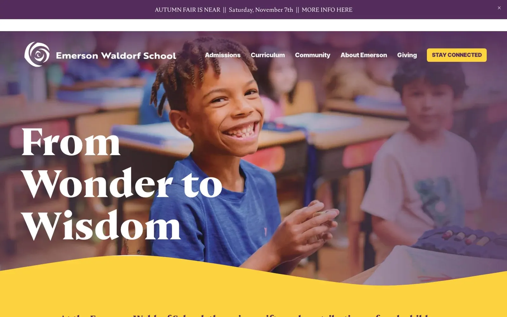

What parents find in the first ten minutes
We read the websites of 114 independent schools and small private schools and tutoring and learning centres in the US the way a parent does: on a phone, with the questions a family asks first.

Parents ask ten questions. Most sites answer four.
Across 114 school websites, the median site answers three of the six parent questions this edition can test. 68% show tuition in dollars on the home page or a page it links to; 59% let a family book a tour or open day online.1

The questions parents actually ask
We turned ten parent questions into ten checks. The bars show how many sites answer each one without making the parent ask.
Figure 1. Share of sites that answer each question on the home page or a page it links to, read from the served HTML. Sorted from least to most answered. The questions were written for schools: tutoring centres rarely publish tuition or open days, so their rates for fees and tours are not comparable with schools.
Three kinds of school, side by side
Independent schools (58): median score 73, fees shown on 91%, a visit bookable online on 72%. Small private schools (31): median score 75, fees shown on 74%, a visit bookable online on 77%. Tutoring and learning centres (25): median score 78, fees shown on 4%, a visit bookable online on 4%. The parent questions were written for schools, so the tutoring rates for fees and visits are not comparable.
Figure 2. Overall score out of 100, one dot per school. The yellow mark is the median for each type.
Emerson Waldorf School
Small private school, Chapel Hill, NC. It answers 4 of the 6 parent questions this edition tests, passes every speed and accessibility check. Its overall website score is 85/100. Named as a positive example; every other site in this report is anonymous.

What it does well
- Shows what it costs without the family having to ask: “Tuition EC Half-Day: $15,730”
- Lets a family book a visit online, from a “Plan A Visit” action
- States its accreditation (“SAIS”)
- Explains financial aid on its tuition page
- Real phone visitors see the main content in 1.7 s (Chrome UX Report, 75th percentile; good is 2.5 s or less)
- No text fails the WCAG 1.4.3 contrast minimum
- Every image has a text description (WCAG 1.1.1)
- Clikiti pillar scores of 90 or more: usability 100, accessibility 99, SEO 95, trust 94
Where it could still improve
- Term dates: the calendar page builds its dates in the browser, so the page a phone or search engine first receives carries none
- Contact: the phone number is not a tappable link, and office hours are not stated
- Speed pillar 45/100 (driven by the throttled mobile Lighthouse run; real phone visitors load it fast)
Four report cards
Four real sites from this edition, one strong, two in the middle and one weak. Each card shows the kind of moment its findings describe; the school itself stays anonymous, and each subject grade is computed from the checks above. The large letter on each card is the overall website score, not the parent checks.

The families left out
Schools serve families with disabilities and families who read in a second language. Their websites often fail those families first.3
Table 1. Accessibility and speed checks, share of the 114 sites that fail.
Method in brief
Read
The home page and up to nine pages it links to, read as a server delivers them: links, forms, text and markup. The parent questions are answered here, by fixed published rules (Appendix A4).
Measure
Google Lighthouse (PageSpeed Insights) in a phone and a desktop render, with Chrome UX Report field data where it exists: load time, contrast and image descriptions. Repeatable.
Review
An expert usability review of each home page against Nielsen's heuristics, used only in the usability part of the score. Every issue must name the heuristic, a severity and the element, or it is dropped.
Read the full methodology Sample, definitions, scoring, precision and limitations, in Appendix A.
For agencies and freelancers
What this means for agencies
For small agencies and freelancers who sell websites to private schools and tutoring centres. We scanned 114 of their websites: 1% score under 60 out of 100, and 54% leave at least three of the questions parents ask unanswered. Here is where the winnable work is, which problems to lead a pitch with, and how to show them without days of spec design.
Who is realistic to win
Independent schools are the most winnable: the lowest median score in this report (73 out of 100), and 0% of them score under 60. Their problems are visible, specific and fixable by a small team.
| Type | Sites | Median | Under 60 |
|---|---|---|---|
| Independent schools | 58 | 73 | 0% |
| Small private schools | 31 | 75 | 0% |
| Tutoring and learning centres | 25 | 78 | 4% |
Score out of 100. "Under 60" is the share of sites that miss most of what a parent looks for.
5 problems to lead a pitch with
- 91%Can I reach a person? Quick fix
Tappable phone and email in the header, with office hours.
On a phone, reaching a person takes more than one tap.
- 80%Text contrast passes 4.5:1 Quick fix
Raise text contrast to at least 4.5:1 in the theme.
Parts of the site are hard to read, and it is a WCAG failure.
- 73%Is it recognised? Quick fix
Show accreditation clearly, with the accrediting body named and linked.
Your best proof of quality is invisible on the site.
- 57%Loads in under 2.5 s on a phone Build
Resize and compress the hero image, defer scripts, aim for under 2.5 s on a phone.
Your home page takes several seconds to appear on a parent's phone.
- 54%When are the holidays? Quick fix
Term dates as a web page, not a scanned PDF.
Current families hunt for term dates every holiday.
Share of sites with the problem. WCAG items are accessibility failures. Every check cites a standard in the method section.
How to show a prospect their problems, and a redesign
- 1Lead with their problem, not your services
Open with one question the site fails, for example "Can I reach a person?" (91% of sites in this report miss it), and show the exact page where the answer should be.
- 2Put a number on it
Compare their site with the sector: across 114 private schools and tutoring centres sites, the median scores 74 out of 100 and answers 3 of the 6 questions parents ask. A number travels further inside the client than an opinion.
- 3Show the fix without days of spec work
A rough redesign that answers those questions persuades better than a proposal, but it usually costs a designer a day or two per prospect. You can sketch it by hand, or use Clikiti: the scan is free and shows any site's problems in about a minute, and paid plans draft a redesign of the home page from the prospect's own brand, from about $2.33 per pitch.
Scan a prospect's site free No sign-up. You see what the prospect would see.
Help every school be easy to choose
Clikiti reads a school's site the way a parent does, shows the report card, and generates the redesign you send before the first call.
See your market on ClikitiMethodology
How this study was designed, who was included, what was measured and how far the results can be relied on. It is written so that an agency can share it with a school leader who wants to check the evidence behind a pitch.
A1. The research question
When a family researches a private school or tutoring centre online, can they find the answers they need first, quickly, on a phone?
Population. Independent schools, small private schools and tutoring or learning centres in the United States: the organisations a small or mid-size web agency can realistically win as clients.
A2. Who was studied
The sample was built from published membership lists and local listings, then screened so that every site in it is one an independent agency could realistically win.
| Source | What it contributes | Sites |
|---|---|---|
| NAIS member schools | Schools listed by the National Association of Independent Schools | 56 |
| AWSNA member schools | Waldorf schools listed by the Association of Waldorf Schools of North America | 20 |
| Known independent schools | Further independent schools identified by the research team | 13 |
| Local tutoring listings | Tutoring and learning centres found in local business listings by city | 16 |
| Known tutoring and test-prep companies | Tutoring and test-prep companies identified by the research team | 9 |
Included
- A single school or centre with its own website (not a page on a district or platform site)
- Based in the United States
- Home page responds and shows the organisation it claims to be (each home page title was checked before scanning)
Excluded
- National brands and multi-city chains or franchises, whose websites are run centrally
- Large institutions with several thousand students, and universities and colleges
- Public, district and government sites
- Parked, placeholder, password-protected or unreachable sites
- Duplicates, and sites already used in another Clikiti study
| From list to sample | Sites |
|---|---|
| Candidates listed | 136 |
| Removed at screening: no response (8), access refused (3), parked (1), password-protected or redirected to another organisation (2) | −14 |
| Removed at editorial review: national tutoring or test-prep brands (6), large institution (1) | −7 |
| Cohort | 115 |
| Removed because the site's robots.txt asks crawlers not to visit | −1 |
| Studied in this edition | 114 |
| Region (US Census) | Independent schools | Small private schools | Tutoring and learning centres | All |
|---|---|---|---|---|
| Northeast | 9 | 5 | 4 | 18 |
| Midwest | 12 | 6 | 4 | 22 |
| South | 21 | 7 | 5 | 33 |
| West | 16 | 13 | 12 | 41 |
| All regions | 58 | 31 | 25 | 114 |
A3. How the sites were read
Pages. The home page, then for each of eight topics (tuition, financial aid, admissions, visits, calendar, accreditation, about, contact) the best-matching link on the home page. Tuition, aid and visit pages not linked from the home page are also looked for one step further, on the admissions page. On average 5.9 pages were read per site.
Speed and accessibility. Google PageSpeed Insights (Lighthouse) on a mid-range phone profile and on desktop, plus Chrome UX Report data from real visitors over the previous 28 days where Google publishes it for the site.
Crawler conduct. One request at a time to each site, at least 400 ms apart, at most ten pages per site; robots.txt is read and obeyed for every page requested; a site that refuses is left out and never retried. The crawler identifies itself as Mozilla/5.0 (compatible; ClikitiResearch/1.0; +https://clikiti.com).
A4. What was measured
6 questions families ask before they visit, answered from what each site publishes, and 3 technical checks against published standards. A check passes only when the rule below is met; anything the crawler cannot confirm counts as not answered.
| Question | Counts as answered when | Standard |
|---|---|---|
| What does it cost?Tuition or fees shown without asking | A tuition or fee amount in dollars appears on the home, tuition, admissions or financial aid page, with the words tuition or fee just before it. Amounts that describe awards, averages, ranges, loans or fundraising do not count. | Clikiti parent question 1 of 10 |
| Can we visit?A tour or open day can be booked online | A link or button that books a tour, visit, open house or information session, or a booking form or scheduling service for a visit, on the home, visit or admissions page. A general application portal on its own does not count. | Clikiti parent question 3 of 10 |
| Is it recognised?Accreditation shown | The site states that the school is accredited, or names an accrediting body (for example WASC, NEASC, ISACS, CAIS, Cognia, Middle States or ACSI), on the home, accreditation, about or admissions page. | Clikiti parent question 5 of 10 |
| Can we afford it?Financial aid or payment plans explained | Financial aid, tuition assistance or a payment plan is explained: either a dedicated page of at least 120 words, or a statement on the tuition or admissions page that says who qualifies, how to apply or by when. | Clikiti parent question 6 of 10 |
| When are the holidays?Term dates published as a page | A calendar or term-dates link on the home page leads to a web page (not a PDF) whose text contains dates or term events such as the first day of school or winter break. | Clikiti parent question 8 of 10 |
| Can I reach a person?Phone and email tappable, hours stated | The home or contact page has a tappable phone link, a tappable email link and stated office hours. All three are needed. | Clikiti parent question 10 of 10 |
| Technical checks | ||
| Loads in under 2.5 s on a phoneLoads in under 2.5 s on a phone | Real visitors on phones see the main content within 2.5 seconds (Chrome UX Report, 75th percentile). Where Google publishes no visitor data, the phone lab test is used. | Core Web Vitals · LCP |
| Text contrast passes 4.5:1Text contrast passes 4.5:1 | No text on the home page fails the WCAG 1.4.3 minimum contrast of 4.5:1, in either the phone or desktop test. | WCAG 1.4.3 |
| Images have text descriptionsImages have text descriptions | Every meaningful image on the home page has a text description (WCAG 1.1.1). | WCAG 1.1.1 |
A5. The website score and the report-card grades
Each site's overall score (0 to 100) is Clikiti's website score, rubric 2.0.0. It measures the website, not the school, and the parent questions above do not feed it. It is a weighted mean of five pillars:
| Pillar | Weight | Based on |
|---|---|---|
| Usability | 30% | Checks of the home page for broken links and images, and an expert review of the page as rendered on a phone and on a desktop screen, against Jakob Nielsen's ten usability heuristics. Each issue must name the heuristic, a severity on the Nielsen Norman Group scale and the exact element or wording; issues without all three are discarded, and two independent passes must agree. |
| Speed | 25% | Google Lighthouse on a mid-range phone (60%) and on desktop (20%), and real-visitor Core Web Vitals from the Chrome UX Report (20%) where available. |
| Accessibility | 25% | Google Lighthouse accessibility audits (70%) and Clikiti's own WCAG checks of the served page (30%). |
| Search | 10% | Google Lighthouse SEO audits (60%) and Clikiti's own search checks of the served page (40%). |
| Trust | 10% | Google Lighthouse best-practice audits (40%) and security header checks (60%). |
Within a pillar, each issue costs points by severity (critical, high, medium, low) and by how many times it occurs; issues based on judgement count at 70% of measured ones, and duplicates of the same root cause count once. On the report cards, the large letter is this overall score (A 90 and above, B 75, C 45, D 30, F below 30). Each subject letter is the share of that subject's checks passed: all of them is an A, none is an F.
A6. Precision
With 114 sites, a share reported for the whole sample is precise to within ±9.2 percentage points at 95% confidence (worst case, a 50% share; 1.96 × √(0.25/n)). By type: independent schools ±12.9 (n = 58); small private schools ±17.6 (n = 31); tutoring and learning centres ±19.6 (n = 25). Differences between types smaller than these margins should be read as similar. Percentages are rounded to whole numbers; medians are the middle value of the sites in a group.
A7. Quality control
- Every home page in the cohort was fetched and its title checked against the listed organisation before scanning
- Detection rules were revised five times against the pages they read; each revision re-checked every site
- Every published figure is recomputed from the data at build time, and a statement in the text that the data does not support stops the build
- Results are published only after automated checks for missing data, anonymity, accessibility of the report itself and the margin of error statement pass
A8. Limitations
- A point-in-time snapshot: sites change, and a site may have improved or declined since it was read.
- Only public pages were read: the home page and the pages it links to. Application portals, logged-in areas and multi-step forms were not tested.
- The parent questions are answered from the page as a server delivers it. Content that only appears after scripts run in the browser (some calendars, for example) is not seen, which the study counts as a gap a search engine or a slow phone would also meet.
- Automated accessibility tests find only part of what WCAG covers; keyboard and screen-reader use need a manual audit.
- The sample is a structured list of real, pitchable organisations, not a random draw. Margins of error are given as a guide to precision, not as a guarantee that the results hold for every school in the country.
- The parent questions were written for schools. Tutoring centres rarely publish fees or open days, so their results on those questions are not comparable with schools.
- Five further checks (admissions steps and dates, teachers' qualifications, a typical day, safeguarding, and keyboard operation) were left out from this edition because they cannot yet be tested reliably from the served page.
A9. Data, licence and corrections
The aggregate results are published as CSV and JSON beside this report under the Creative Commons Attribution 4.0 licence: you may reuse, adapt and share them, including in client proposals, with a credit to Clikiti and a link. No per-site results are published. Corrections and removal requests are reviewed and answered personally; see the end of this report.
Schools in this study
The 114 websites in this edition, by type. This list says who was scanned and nothing more: results in this report are shown only in aggregate or anonymously.
Independent schools (58)
- Albuquerque AcademyAlbuquerque, NM
- Allendale Columbia SchoolRochester, NY
- Berkeley Preparatory SchoolTampa, FL
- Brownell Talbot SchoolOmaha, NE
- Buckingham Browne & NicholsCambridge, MA
- Casady SchoolOklahoma City, OK
- Castilleja SchoolPalo Alto, CA
- Catlin Gabel SchoolPortland, OR
- Charlotte Latin SchoolCharlotte, NC
- Colorado AcademyDenver, CO
- Crystal Springs Uplands SchoolHillsborough, CA
- Detroit Country Day SchoolBeverly Hills, MI
- Ensworth SchoolNashville, TN
- Francis Parker SchoolSan Diego, CA
- Francis W. Parker SchoolChicago, IL
- Gilman SchoolBaltimore, MD
- Hathaway Brown SchoolShaker Heights, OH
- Head-Royce SchoolOakland, CA
- Holland HallTulsa, OK
- Hopkins SchoolNew Haven, CT
- Isidore Newman SchoolNew Orleans, LA
- Kent Denver SchoolEnglewood, CO
- Lakeside SchoolSeattle, WA
- Latin School of ChicagoChicago, IL
- Memphis University SchoolMemphis, TN
- MICDSSt. Louis, MO
- Oregon Episcopal SchoolPortland, OR
- Pace AcademyAtlanta, GA
- Packer Collegiate InstituteBrooklyn, NY
- Park Tudor SchoolIndianapolis, IN
- Pembroke Hill SchoolKansas City, MO
- Phoenix Country Day SchoolParadise Valley, AZ
- Ransom Everglades SchoolMiami, FL
- Ravenscroft SchoolRaleigh, NC
- Riverstone International SchoolBoise, ID
- Rowland HallSalt Lake City, UT
- Sage Hill SchoolNewport Coast, CA
- Shady Side AcademyPittsburgh, PA
- Sidwell Friends SchoolWashington, DC
- St. Andrew's Episcopal SchoolRidgeland, MS
- St. Mark's School of TexasDallas, TX
- St. Stephen's Episcopal SchoolAustin, TX
- The Altamont SchoolBirmingham, AL
- The Blake SchoolMinneapolis, MN
- The Bolles SchoolJacksonville, FL
- The Bush SchoolSeattle, WA
- The Dalton SchoolNew York, NY
- The Episcopal AcademyNewtown Square, PA
- The Harker SchoolSan Jose, CA
- The Hockaday SchoolDallas, TX
- The Kinkaid SchoolHouston, TX
- The Lovett SchoolAtlanta, GA
- The Potomac SchoolMcLean, VA
- The Seven Hills SchoolCincinnati, OH
- The Wheeler SchoolProvidence, RI
- University SchoolHunting Valley, OH
- University School of MilwaukeeMilwaukee, WI
- Waynflete SchoolPortland, ME
Small private schools (31)
- Aspen Country Day SchoolAspen, CO
- Austin Waldorf SchoolAustin, TX
- Brooklyn Free SchoolBrooklyn, NY
- Cedar Springs Learning Center (formerly Cedar Springs Waldorf School)Placerville, CA
- Chicago Waldorf SchoolChicago, IL
- Cincinnati Waldorf SchoolCincinnati, OH
- Denver Waldorf SchoolDenver, CO
- Emerson Waldorf SchoolChapel Hill, NC
- Honolulu Waldorf SchoolHonolulu, HI
- Ithaca Waldorf SchoolIthaca, NY
- Lake Champlain Waldorf SchoolShelburne, VT
- Lake Washington Girls Middle SchoolSeattle, WA
- Madison Waldorf SchoolMadison, WI
- Missoula International SchoolMissoula, MT
- Oak Grove Lutheran SchoolFargo, ND
- Pacific Northern AcademyAnchorage, AK
- Portland Waldorf SchoolMilwaukie, OR
- Prairie Hill Waldorf SchoolPewaukee, WI
- Sacramento Waldorf SchoolFair Oaks, CA
- Seattle Girls' SchoolSeattle, WA
- The College SchoolWebster Groves, MO
- The Evergreen SchoolShoreline, WA
- The Miquon SchoolConshohocken, PA
- The Post Oak SchoolHouston, TX
- Tucson Waldorf SchoolTucson, AZ
- Waldorf School of AtlantaDecatur, GA
- Waldorf School of BaltimoreBaltimore, MD
- Waldorf School of New OrleansNew Orleans, LA
- Waldorf School of PrincetonPrinceton, NJ
- Waldorf School of San DiegoSan Diego, CA
- Washington Waldorf SchoolBethesda, MD
Tutoring and learning centres (25)
- Bespoke EducationNew York, NY
- Cardinal EducationPalo Alto, CA
- Columbus Tutoring ServicesColumbus, OH
- Educational ConnectionsFairfax, VA
- High Performance TutoringSalt Lake City, UT
- Higher Ground LearningSalt Lake City, UT
- InspiricaWestport, CT
- Ivy Bound Test PrepFarmington, CT
- Learning Matters, Inc.Nashville, TN
- Mindfish Test PrepDenver, CO
- Miriam School and Learning CenterSt. Louis, MO
- MyGuruChicago, IL
- NextGen AcademicsSeattle, WA
- PrepMattersBethesda, MD
- Prime Learning CenterBellevue, WA
- Shiery's TutoringBellevue, WA
- Sophos AcademicsPhoenix, AZ
- Tampa Bay TutorsTampa, FL
- Test TitansDallas, TX
- The Art of LearningPhoenix, AZ
- The Math LabScottsdale, AZ
- Tutor Me EducationLos Angeles, CA
- Tutor PortlandPortland, OR
- Tutoring BostonNewton, MA
- Willow Tree TutoringSt. Peters, MO
About this study
This report is based on automated scans of publicly available home pages, and pages they link to, run on 2026-10-12. Its findings are a point-in-time technical snapshot of each website. They are not a judgement of any school's education, safety or quality, and automated checks may contain errors. Clikiti is not affiliated with, and does not endorse, any school listed here; trademarks belong to their owners. The report is provided “as is” under CC BY 4.0, without warranty of any kind. Every person in this report's photographs is AI-generated; none is a real person. The one school screenshot is the featured school's own home page, shown unaltered.
Remove my school from this study
We review every request and reply when it's done; removed schools are excluded from future editions.